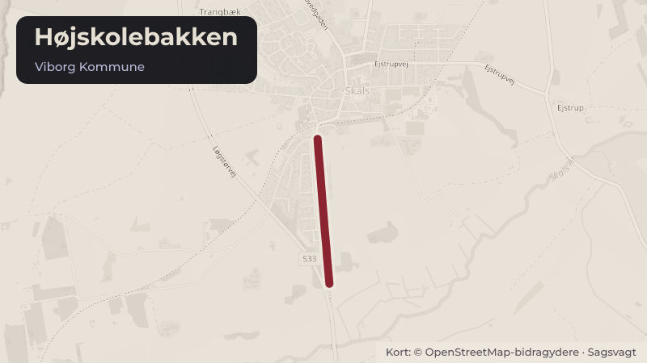

På dagsordenen 25. november, Teknisk Udvalg, Viborg
Stillingtagen til planlægning for friplejehjem i Skals
Skoler og børnÆldre og sundhed

Kort fortalt
- Forslaget
- Der i så fald ikke afholdes borgermøde i forbindelse med idéfasen.
- Hvem
- Teknisk Udvalg, Viborg Kommune
- Hvornår
- Onsdag 25. november 2026
- Status
- På dagsordenen. Sagen behandles på mødet.
Er noget forkert her? Skriv til os
Hvad kan du gøre?
- Skriv til politikerne
- Udvalgets møder er lukkede, men du kan skrive til medlemmerne før mødet onsdag 25. november 2026. Du finder dem på viborg.dk.
Læs hele sagen Kommunens egen tekst
Indstilling
Direktøren for Teknik & Miljø foreslår, at Teknisk Udvalg tager stilling til og indstiller til
Økonomi- og Erhvervsudvalget,
1. om planlægningen og idéfase for et friplejehjem på Højskolebakken i Skals sættes i
gang som beskrevet i bilag 3, og
2. at der i så fald ikke afholdes borgermøde i forbindelse med idéfasen.
Sagsfremstilling
Historik
Byrådet besluttede den 6. oktober 2021 at godkende helhedsplanen for Skals. Med
helhedsplanen ønsker man at placere offentlige funktioner i Skals midtby samt omdanne
Skalmagrunden i det centrale Skals til et nyt boligområde (link til sag nr. 14 på byrådets møde
d. 6. oktober 2021).
Ansøgning om hhv. et friplejehjem og et boligområde i Skals blev fremsendt som høringssvar til
forslag til Kommuneplan 2025-2036. Byrådet besluttede ved behandling af høringssvar, at
forvaltningen skulle gå i dialog om udvidelse af boligområdet ved Højskolebakken og et areal til
friplejehjem i Skals med henblik på videre planlægning (link til sag nr. 9 på byrådets møde den
Teknisk Udvalg besluttede den 17. september 2025 at udsætte igangsætningen af planlægning
for et friplejehjem og boligområde på Højskolebakken med henblik på at undersøge alternativ
placering, der giver mere synergi med helhedsplanen for Skals (link til sag nr. 2 på Teknisk
Udvalgs møde d. 17. september 2025).
Teknisk Udvalg besluttede den 12. august 2026 at der ikke skulle arbejdes videre med
planlægning for friplejehjem på Højskolebakken. (Link til sag nr. 2 på Teknisk Udvalgs møde
den 12. august 2026).
Projektgruppen bag Skals Friplejehjem har siden indgået aftale om at erhverve jord på den
sydvestlige del af Skalmagrunden for at opføre nye boliger, der i overensstemmelse med
helhedsplanen for Skals, mens friplejehjemmet fortsat ønskes placeret på Højskolebakken.
På den baggrund har Venstre, Socialdemokratiet og Danmarksdemokraterne i en
pressemeddelelse givet opbakning til planerne, hvorfor sagen forelægges på ny.
Inddragelse og høring
Intet.
Beskrivelse
Projektgruppen bag Skals Friplejehjem har genansøgt om planlægning for et friplejehjem ved
Højskolebakken i Skals. Ansøgningen er indsendt på baggrund af en indgået aftale om at
erhverve jord på den sydvestlige del af Skalmagrunden for at opføre nye boliger der i
overensstemmelse med helhedsplanen for Skals, mens friplejehjemmet fortsat ønskes placeret
på Højskolebakken.
Området ligger i den sydlige del af Skals på markarealet øst for Højskolen for design og
håndarbejde.
Oversigtskort er i bilag 1.
Projektforslaget
Ansøgerne ønsker på baggrund af den hidtidige dialog, at der arbejdes videre med
planlægning for friplejehjemmet, mens et tidligere ønske om planlægning for boliger i området
trækkes tilbage. Friplejehjemmet ønskes med ca. 30 pladser og vejadgang fra Højskolebakken.
Skitseforslaget er i bilag 2.
Eksisterende planforhold
Lokalplan
Området er ikke omfattet af en lokalplan og ligger i landzone.
Kommuneplan
En del af området er i Kommuneplan 2025-2036 udlagt til boligområde (SKAL.B4.06) med
mulighed for åben-lav, tæt-lav og etageboliger. Den øvrige del af det ansøgte område er ikke
udlagt i kommuneplanen.
Planlægningen kræver, at der udlægges en ny ramme til almen service, der delvist inddrager
det nuværende rammeområde til boliger.
Realisering af projektet forudsætter lokalplanlægning og et kommuneplantillæg.
Lokal udviklingsplan
Der er udarbejdet en lokal udviklingsplan for Skals, som beskriver, at offentlige funktioner
placeres i centrum af Skals, samt at der etableres stiforbindelser på tværs af byen. Arealet
nord for det ansøgte område er udpeget til fremtidig byvækst.
Kystnærhedszone
Skals ligger inden for kystnærhedszonen, hvor der er skærpede krav til udlæg af nye arealer til
byvækst. Der ligger dog by mellem kysten og området, hvorfor det forventes at kunne
inddrages til ny byudvikling.
Opmærksomhedspunkter
Følgende emner skal afklares nærmere, hvis planlægningen igangsættes:
Regnvandshåndtering: Der forventes behov for regnvandsbassiner til forsinkelse af tagog overfladevand samt en rensedam ved Højskolebakken.
Området ligger i indvindingsoplandet til Skals Vandværk, hvorfor der kan forventes
restriktive krav, hvis der skal ske nedsivning. Dette kan være forbud mod brug af tag- og
facadematerialer med tjærestoffer og tungmetaller, at veje og parkeringspladser
etableres med fast belægning, at tagvand og overfladevand fra veje og parkeringsarealer
opsamles, og krav til nedsivning.
Trafik: Vejadgangen fra Højskolebakken skal tilpasses det eksisterende helleanlæg på
Højskolebakken. Ansøger skal etablere fortov på Højskolebakken og frem til
vejadgangen, hvilket ansøger er orienteret om. Det skal undersøges, om der er mulighed
for at etablere en stiforbindelse langs læbæltet øst for området til Himmerlandsstien.
Arkæologi
Viborg Museum vurderer, at der er stor sandsynlighed for at støde på arkæologiske fund i
området, da dele af området ikke er frigivet, og der tidligere er fundet væsentlige arkæologiske
fund. Udgiften til større forundersøgelser og evt. nødvendige arkæologiske undersøgelser
påhviler ansøger og bør foretages inden et planforslag behandles politisk.
Principper for planlægningen
Forvaltningen foreslår, at planlægningen tager udgangspunkt i følgende:
Området kan anvendes til offentlige formål som friplejehjem
Bebyggelse kan opføres i maks. 8,5 m og maks. 2 etager
Bebyggelsesprocent på højst 30 %
Vejadgang sker fra Højskolebakken via en stamvej, der kan forlænges til et evt. fremtidigt
boligområde nord for området, der er udlagt i kommuneplanen
Der skal etableres stiforbindelser internt i området og undersøges mulighed for tilkobling
til eksisterende stier i byen
Idéfase
Lokalplanlægningen forudsætter, at der vedtages et tillæg til Kommuneplan 2025-2036. Da der
er tale om væsentlige ændringer i form af inddragelse af nye større arealer og ændret
anvendelse ønsker byrådet at indkalde idéer og forslag mv. til planlægningsarbejdet.
Idéoplægget indeholder en beskrivelse af planområdet, det forventede indhold i planlægningen
og hovedspørgsmål. Udkast til idéoplæg er i bilag 3.
Idéfasen foreslås fastsat til 4 uger. Hvis der kommer idéer og forslag, der kan medføre, at
planlægningen skal opgives eller ændres væsentligt i forhold til nedenstående principper, vil
disse blive forelagt udvalget til beslutning, inden planforslagene udarbejdes. Alternativt vil idéer
og forslag blive forelagt ved godkendelse af planforslagene.
Forvaltningen foreslår, at der ikke afholdes borgermøde i forbindelse med idéfasen, men først
når der forelægger et konkret lokalplanforslag og forslag til kommuneplantillæg.
Alternativer
Intet.
Tidsperspektiv
Udkast til tidsplan
Forvaltningen forventer følgende tidsplan:
Idéfase primo 2027
Planforslag til vedtagelse medio 2027
Offentlig høring medio 2027
Endelig vedtagelse ultimo 2027
Økonomiske forhold og konsekvenser
Intet.
Juridiske og planmæssige forhold
Hvis en ejendom, der benyttes til landbrug, gartneri, planteskole eller frugtplantage, overføres
til byzone, kan grundejeren inden fire år efter overførslen kræve ejendommen overtaget af
kommunen. Grundejeren har skriftligt fraskrevet sig retten til, at kommunen overtager
ejendommen.
Kilde: Viborg Kommune, Teknisk Udvalg, dagsorden fra mødet onsdag 25. november 2026, punkt 5. Læs den originale sag hos kommunen.
Bydele i sagen: Skals
Steder i sagen: Højskolebakken